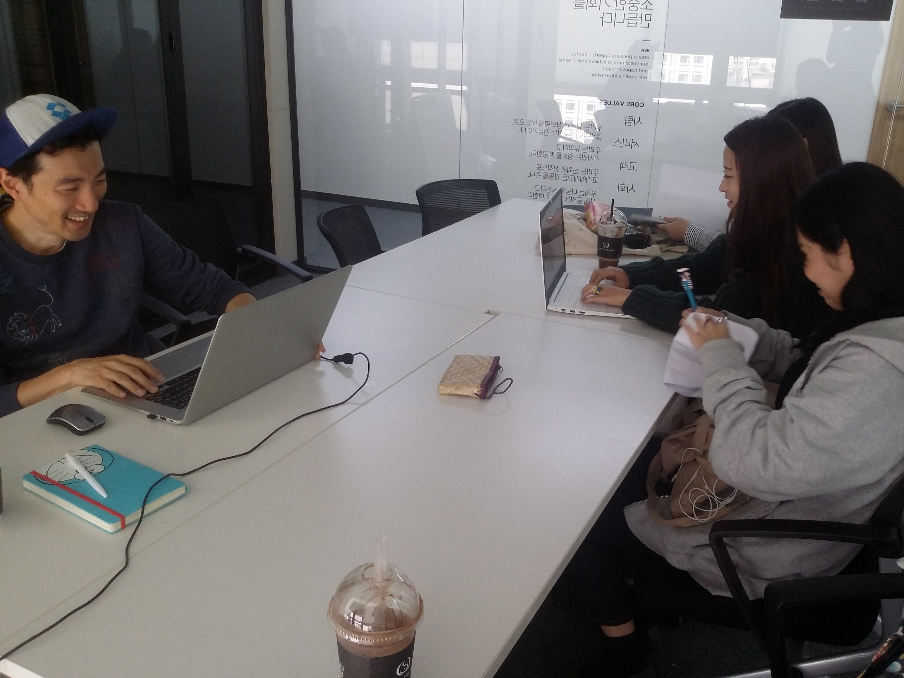

캡스톤 디자인 주간 보고서 [7주차]
| 팀 명 | 11팀 |
|---|---|
| 과제명 | 알바천국 감성 푸쉬 서비스 기획 |
| 회의날짜 | 2016년 10월 11일 ( 10:00 ) ~ 2016년 10월 11일 ( 15:00 ) |
| 참석자 | 성명 | 역할 | 서명 |
|---|---|---|---|
| 안가은 | 회의록 작성, 팀장 | ||
| 김윤신 | 기획 | ||
| 박채원 | 기획 | ||
| 조영지 | 기획 |
| 주간 보고 내용(한주의 내용을 간단하게 정리) |
|---|
|
미디어 윌의 알바천국 회사를 방문하였습니다.  알바천국 관계자 분들과 만나 저희가 지난 주 진행한 해외 구인/구직 앱 벤치마킹과 그를 바탕으로 한 프론트 메뉴 구성을 보여드렸습니다. 메뉴 구성에 대한 의견을 들은 후 저희가 진행한 벤치마킹에서 뽑은 키워드 네 가지,
현재 알바천국의 메뉴 '현위치'를 개선하는 것을 목표로, 7주차에는 다음과 같은 일을 진행하였습니다.
|
| 다음 진행 방향 및 계획 |
|---|
|
알바천국 회사 방문 및 과제 문서 제출 사용자 경로 조사 및 테스트 예정 |
* 주차별 주간 보고서를 필히 제출